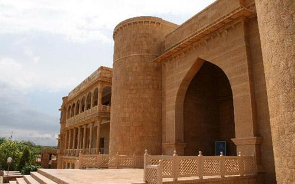
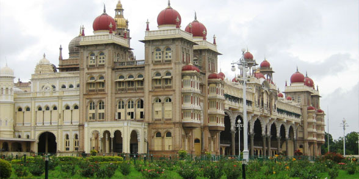
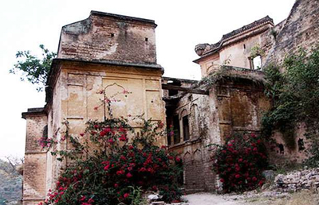
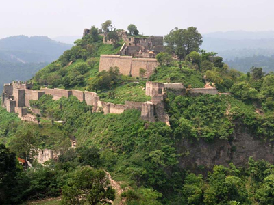
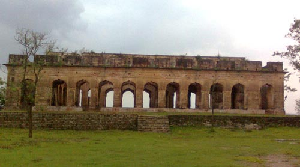

INTRODUCTION
Himachal Pradesh is often referred to as the land of Gods. It has also gained popularity owing to
the
enchanting diversity. Taking a heritage tour of the famous monuments of Himachal Pradesh will give a
proof
of the existence of a culmination of the best features of all the worlds. From historical forts to
colonial
mansions, from religious temples to sacred monasteries: all will be found here. A trip to Himachal
Pradesh
will provide an opportunity to see the famous monuments that attract hordes of tourists. Himachal
Pradesh is
dotted with famous monuments that are an important part of every tour package to this region. A
holiday in
this region remains incomplete until the beautiful forts and palaces are paid a visit to. As one
walks
through these, awestruck at the height at which they have been constructed, the monumental heritage
of
Himachal Pradesh unfolds itself to the visitor.
About forts in himachal
Throughout history, Himachal Pradesh has managed to enchant every ruler who has set eyes upon its
picturesque land. He has been inspired to leave a mark on this place. A tour of these forts, or a
holiday
here will give the tourist enough to be wonderstruck about. The famous Kangra fort in the district
of Kangna
has a circumference of 4 kms., and various gates and shrines. As the oldest fort in Himachal
Pradesh, it has
carved a niche in the history of Himachal Pradesh. The Sujanpur Fort in the Kangra valley displays
wall
paintings. Other forts that are worth visiting here are Kuthar fort, in close vicinity from Shimla,
and
Kumru fort, located at about 229 kms from Shimla. Clusters of houses amidst fields and orchards
surround
this fort, making it a treat to the eyes.
FAMOUS FORTS AND MONUMENTS OF HIMACHAL PRADESH
War Memorial

Situated: (Shimla), Himachal Pradesh, India
In the Fond Memory of: After Independence War Fare Heroes of (Himachal Pradesh)
The immense city of Dharamsala full of filled tranquility among abundant foliage and tall pine trees
holds a
lot of history. At the entrance of the city lies the War Memorial to commemorate the Brave War
Heroes of
Himachal Pradesh in the era of Post independence, who sacrificed their lives during the Indo-China
War,
1962, the Indo-Pak wars in the year 1947 and 1965 and then again in the year 1971, and the UN Peace
Operations. Green lawns and exquisite landscaping enrich and adorn the structure of the War Memorial
and
elicits a true feeling of patriotism in the minds of the tourists. The restaurants located in the
adjoining
areas offer nice beverages to the visitors.
Rang Mahal

Location: Chamba, Himachal Pradesh
Houses: Himachal Emporium, Women’s College
Built By: Raja Umed Singh
Built in: Mid 18th Century
Hordes of tourists come to Chamba every year, to winess the beauty and historic content of the Rang
Mahal.
In the mid-eighteenth century, Umed Singh laid the foundation of the palace with the aim to serve as
the
king’s abode, and warehouse his precious treasure and the royal grain. The Rang Mahal of the fort is
influenced by Mughal architecture. Traditional handicraft of Chamba, as old as 1000 years, is
displayed on
kerchiefs, handkerchiefs etc. with fine silk embroidery as executed by the local women, which
available for
purchase at the Himachal Emporium here. This government property is also used by the Department of
Handicraft as a work-shop of slippers, shoes etc. bearing the traditional style of this place. Bits
and
pieces of historical items that were left in this palace are also housed by the other nuseums of the
country. The beautiful and interesting paintings that tell the story of Lord Krishna make up the
most
extensive hill collection belonging to the Kangra School. But the main attraction of the palace
remains the
doors with carvings and paintings.
The visiting time for the tourists is from morning, 10 am to afternoon, 1 pm and it again opens from
2 pm to
5 pm in the evening.
Maharaja Palace

Region: Himachal Pradesh, Chail
Constructed In: 1891
Altitude Location: 2,250 meter
Special Feature: One tiniest hill resort of Himalaya
This is the smallest of the hill resorts of Himalaya.
Among the hill resorts of Himalaya, Chail, built on a height of two thousand two hundred fifty m.,
is the
tiniest. On being barred from entering the Shimla, Patiala’s King Bhupinder Singh decided to get his
own
personal summer capital constructed at Chail which turned out to be the most perfect choice due to
the
regality that covers every bit of Chail as it stands bounded by a wall of tall deodar trees. Shimla
is
located just forty km. away and is a short journey from this here. From the downtown area of Chail,
the
highest point is around 1.5 km., the peak point being at 8000 feet. The Sidh Baba temple in the down
area of
Chail is very famous. Legends say that, the King’s palace was actually located here, among the wide
deodar
trees. One night, Sidh Baba, the sage, appeared in the dream of the Maharaja to tell him that this
was the
holy place where he used to meditate. The very next day, the King moved his palace away from this
spot. He
also had a beautiful temple constructed to pay respect to Sidh Baba.
The construction work of Maharaja Palace was completed in 1891. The splendid palace was furnished
with
delicate and classic finesse, complete with relaxed bug cottages and huts, tranquil walks through
wide
forests, children’s park, extensive lawns, sport facilities and lovers’ hill. This place is actually
a
resort which offers the facility to stay in one of the cottages or huts in the surrounding areas, at
a low
tariff. The entire Rajgarh cottage, with 4 rooms can be rented, with the kitchen and dining room.
Monal
Cottage, Wood Rose Cottage etc. are big double-roomed huts with kitchen. This is the perfect
honeymoon spot
for newly-wed couples. The hill resort also gives the exciting opportunity to go trekking and
fishing, or
enjoy cricket on the highest cricket pitch of the world. There is also a ground for the royal sport
of
polo.
Gurkha Castles

Region: Himachal Pradesh
Gurkha Castles is amongst the key historical tombstones of the Himachal, it has the potential to be
the key
factor of the heritage tourism of the state. Yet, the visitors and tourists neglect it. The ancient
Arki,
Kehloor, Hindoor, Bhagat, Sirmour, Jubbal, Mahlog, Kuthar and Kyonthal and other places, now
collectively
known as Bilaspur,Solan, Shimla and Sirmour districts, were once under the Gurkha rule. In 1815,
David
Ochterlony, a British Major started operations against the Gurkha rulers. Gurkha castles stand tall
at
Solan,Sirmour, Bilaspur and Shimla districts, commemorating the life and time of the Gurkha regime.
The
chief attractions are the forts of Malaon, Banasar, Subathu and Dhar, all under the boundaries of
Solan
district.
Most of the forts of Gurkha regime are said to have been constructed by the citizens of the captured
cities
who were enforced to do the hard work and not even paid for it. Mash dal, Lime grind and surkhi were
used to
build the stone walls of most of the forts. The Malaon castle at Solan, which is quite near to
Nalagarh, was
constructed by Amar Singh Thapa and commemorates territories of western hill's that had been
detained and
captured by the Gurkha rulers through the vast struggle among the Sirmour, Hindoor and Kangra states
who
tried to control Bara Thakurai, an insignificant state in the west of Garhwal. On January 16, 1815,
Major
David Ochterlony had the northern, eastern and southern parts sealed.
Kangra Fort

Kangra Fort was built by the Rajput rulers of Katoch dynasty. Surprisingly, it was mentioned in the
records
of Alemxander the Great dating to 4th century BC. Hence, it is said to be the oldest fort in India.
The fort
in the outskirts of the town Kangra is one of the famous forts in Himachal Pradesh.Another popular
site.
Masroor rock-cut temple is also situated near the fort.
Tihra fort

Location : Sujanpur Tihra
Built in : 1860 A.D.
Inaugurated By - Raja Sansar Chand
Tihra fort is situated by the banks of river beas at sujanpur tihra ,hamirpur himachal pradesh , it
was
buikt by raja sansar chand
situated bover the hills this beauty was crafted by danish designers. it was ruined by 1905
earthquake but
still its the one to watch
you can the see the sceniec beauty from the rooftop nd the famous tihra chaugan and the sainik
school
sujanpur tihra .